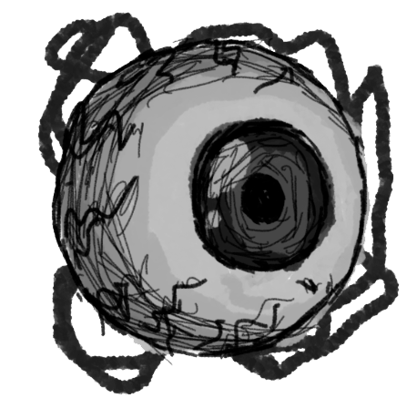

Sobrecarnal
Larissa Stargogh
Nota da Autora
Este texto é o piloto de uma obra que ainda não foi lançada oficialmente.
Para acompanhar curiosidades, atualizações sobre a história e o processo de criação de Sobrecarnal, siga meu perfil no TikTok: @laristargogh.
Prólogo
Estava escuro.
UM
Ego

Os treze anos são uma idade estranha; Lúcia, para não fugir à regra, vomitou um olho inteiro. A porcelana do vaso sanitário estava gelada sob as mãos, o coração batia forte e os olhos lacrimejavam. Do fundo do líquido marrom, outrora dobradinha com feijão, emergiu uma sombra turva que alcançou a superfície como a bola branca percorrida por inúmeros vasos sanguíneos, que dançou no vômito até parar de íris para cima.
Enquanto isso, as meninas ainda cantavam no pátio embaixo do sol do meio-dia. Vozes inocentes, uniformizadas com camisas de gola fechada, saias pretas abaixo dos joelhos e sapatilhas.
“Silêncio na alma, as mãos a juntar.
Olhar para o chão, prontas para escutar.
A ordem é santa, perfeita e fiel.
O erro é espinho, a regra é o céu…”
O estômago de Lúcia embrulhava de novo, a mesma sensação que a fizera abandonar seu lugar na fila do coro e correr para o banheiro mais próximo. Cantavam aquilo todos os dias depois do almoço, ela cantava aquilo desde que aprendera a falar. A letra estava escrita na parte interna de seus tecidos subcutâneos, em contato com seus músculos, desde antes de aprender a ler. Mas, nos últimos meses, era como se seu sistema imunológico estivesse rejeitando cada uma daquelas palavras. De pé, na formação perfeitamente alinhada de órfãs entre seis e dezessete anos, asfixiou-se com aquele som como se fosse fumaça, sua garganta fechou. Ao abrir a boca para tentar acompanhar a música, o veto subiu pelo esôfago em formato esférico.
“Quem ama a regra jamais se desfaz
de tudo o que é puro, reto e em paz.
Nos passos firmados não há o que temer.
A alma se curva para não se perder...”
Ela aproximou a mão devagar, molhou a ponta dos dedos para pegar o olho. Do vômito, o nervo preso atrás dele subiu junto, ligando todos os desenhos finos e vermelhos na parte de trás, pendurado no ar, pingando. Lúcia encontrou o próprio reflexo no disco preto dilatado no centro de tudo. De alguma forma, ela sentia que aquilo também a via.
Mas nenhum medo atormentava seu coração. Pelo contrário, fascínio tomava conta de seus olhos (os do rosto). Aquilo havia saído dela, então era parte dela, era ela mesma. Lúcia deixou os joelhos cederem, a saia se despejou no chão ao redor dela, as coxas tocaram os ladrilhos de cimento pintado com padrões que imitavam flores, plantados naquele chão há quarenta anos. Estava rodeada por um jardim de cores terracota e marfim, e, pela primeira vez, pareceu real estar sentada num paraíso floral.
Até que alguém bateu na porta.
— Lúcia, aconteceu alguma coisa? — perguntou Irmã Raquel.
Instintivamente e sem sentido, Lúcia escondeu o olho entre as duas mãos e se curvou contra o próprio peito.
— Eu já vou, já vou!...
E escutou atentamente; a espera, o suspiro do outro lado, e o refrão que se repetia; a ordem é santa, perfeita e fiel… A sombra debaixo da porta foi embora. Ela se levantou rapidamente, o vaso estava imundo e suas mãos fediam. Puxou a cordinha da caixa acoplada, a descarga fez drama barulhento para sugar toda a água para o fundo e purificar sua imundice. O fundo borbulhou, um ronco abafado atravessou o piso e as paredes, pareciam as entranhas do orfanato se movendo, mas provavelmente era só o monstro do encanamento se alimentando, como as meninas costumavam dizer para assustar as mais novas, pelo menos alguém gostava de dobradinha com feijão. Lúcia correu para a pia e lavou as mãos e o olho em água corrente, com toda a delicadeza do mundo.
Entreabriu a porta. As garotas agora encontravam-se dispersas no pátio costurado por arcadas no centro do casarão barroco de dois andares. Irmã Raquel, uma estaca alta entre os pequenos grupos de crianças, envolta no hábito preto de corte impecável, com uma gola branca que parecia parte da garganta, não olhava para ela. Lúcia saiu para o claustro escondendo a mão embaixo da blusa, deu as costas duras para a imagem distante da freira.
— Lúcia!
Não olhava, até então. Ela virou apenas o rosto. Irmã Raquel a esperava. Lúcia permaneceu onde estava com uma boba esperança de que a freira poderia mudar de ideia, mas ela também permaneceu onde estava, como estava.
Lúcia respondeu ao chamado, um pé na frente do outro, as mãos para trás e o queixo quase no peito.
— Quem te permitiu sair no meio da canção conjunta? — perguntou Irmã Raquel.
O véu poderia conceder às demais freiras um ar acolhedor e bondoso; àquela, não. A estética católica atingia Raquel mais como um passado de inquisição, morte, fogo e julgamento, embora seu olhar predatório e rosto anguloso a aproximasse mais de uma bruxa, cujos pés de galinha começam a denunciar a idade, mas que usa de magia negra para segurar a beleza.
— Eu só… precisei ir ao banheiro — disse Lúcia.
— Quem te permitiu?
Bruxa. Era o que Lúcia acreditava que ela era. Uma bruxa infiltrada na casa de Deus para destruir sua paz.
— Ninguém. Me desculpa.
— Você deve esperar pelo final ou ir antes, entendeu?
Algumas meninas da idade de Lúcia estavam próximas o suficiente para farejar a confusão. Duas agarraram no braço uma da outra e se aproximavam devagar, puxadas pelo nariz, pequenas roedoras atrás de algo para alimentar o tédio.
— Foi só uma vez, já cantamos tantas vezes… — disse Lúcia, com o canto do olho preso em Angélica e Carina chegando perto demais.
— Olha pra mim — intimou irmã Raquel, Lúcia obedeceu. — É importante que sempre participe, tudo o que fazemos tem um propósito, preciso que você seja complacente… O que está escondendo?
— Eu não sei o que significa complacente.
— Lúcia, o que está escondendo?
— Nada?
Raquel agarrou o pulso de Lúcia, ela resistiu, mas a possibilidade de acabar machucando sua coisinha com um movimento errado a fez fraquejar.
— Misericórdia… — sussurrou Raquel, boquiaberta.
Assombro apoderou-se de seu rosto, como quem testemunha a volta de um antigo demônio. A mão do pulso fino que Raquel apertava, segurava um olho humano, o nervo escapava e roçava no braço dela.
— O que a Lúcia tem? — chegou Angélica, colada em Carina. Tinham um jeito parecido, prendiam os cabelos em uma trança, assim como todas as garotas do orfanato. A diferença mais evidente era que Angélica tinha as pálpebras e olheiras manchadas de branco, e olhos muito, muito claros. Enquanto Carina tinha algo do leste-asiático no rosto, diluído em alguma geração passada.
Irmã Raquel puxou Lúcia contra si, de costas para elas, escondendo a coisinha entre seus corpos.
— Angélica, não deve escutar o que não te convém — disse Raquel, que cochichou entre os dentes para Lúcia: — Dá descarga nisso, agora.
— Mas eu quero ver — disse Angélica. Ela e companhia esticaram o pescoço para espiar.
Raquel guiou Lúcia para a direção do banheiro com um empurrão.
— Não tem nada pra ver — disse ela.
Lúcia olhou para trás, Irmã Raquel retribuiu com um olhar que repetia “Dá. Descarga. Nisso.”, enquanto se punha na frente das curiosas. Ela caminhou com a mão dentro da blusa e apertou o passo.
Ao alcançar o banheiro, bateu a porta com as costas, virou a chave e respirou fundo.
. . .
Foi até o vaso, encarou a água. Era uma descarga para dar adeus a sua coisa, ainda tão nova.
— Minha… — Não do monstro no encanamento.
Não era justo, não tinha que ser assim. Deu a descarga — em vão, a água não levou nada. Ela enfiou o olho na boca, fechou com cuidado, sentindo-o amassar levemente.
Ao sair para o claustro mais uma vez, deu de cara com Irmã Raquel bastante apressada. Ela entrou, levantou a tampa do vaso, checou a lixeira, olhou para os cantos e voltou para Lúcia.
— Não me apareça com uma coisa dessas de novo, não apareça para ninguém. Você é uma boa menina, não deve ficar brincando com essas…
Lúcia a encarava de baixo, com os olhos bem abertos e a boca bem fechada. Raquel levou a mão à testa, suspirando pesado.
— Se prove, se prove, se prove, Raquel… — ela saiu andando com a localização de onde cravaria os joelhos já em mente.
Assim que Raquel se afastou o suficiente, Lúcia correu para a escadaria que levava ao segundo andar. Normalizou o ritmo ao passar por meninas mais velhas conversando no corredor e entrou em uma das portas. Ficou aliviada ao encontrar o dormitório, com quatro camas de cada lado, vazio.
A sensação em sua boca era redonda e gelatinosa. Cuspiu o olho nas mãos. Estava babado por inteiro e não deixara na língua gosto diferente do que havia posto para fora minutos atrás. Secou-o como pôde com a barra da blusa.
Andou até o centro do quarto e girou sem rumo procurando por alguma ideia. Avistou, ao lado do único guarda-roupa, o baú com a mochila de Angélica e Carina em cima. Ela correu para ele, jogando as mochilas para o chão. Levantou a tampa, estava cheio dos agasalhos de doações, ou seja, ninguém mexeria ali enquanto junho não chegasse — e era fevereiro.
Ela afundou o olho entre as roupas até encostar no fundo, puxou a mão vazia de volta. Organizou o que saiu do lugar, fechou a tampa e recuou. Pronto, o mesmo cenário de quando entrara, nada havia acontecido.
E agora?...
Ela tinha que ir, mas a sensação de abandono pesava. Então, Sara de 14 anos e Luísa de 11 entraram no quarto. Lúcia olhou para os lados e coçou a nuca. As colegas passaram por ela conversando sobre qualquer coisa, a mais nova pulou na cama de barriga para baixo e pés para cima, a outra abriu as janelas. Lúcia abriu a gaveta de um dos criados-mudo e fingiu que estava procurando alguma coisa.
— Lúcia, hoje não é seu dia no revezamento de ajudar com a louça? Estão esperando lá embaixo.
É mesmo, meu Deus! Lúcia se endireitou até meio tonta. Os afazeres do dia ainda existiam. E era melhor ela comparecer se não quisesse outra bronca, as Irmãs odiavam atrasos. Lúcia então correu, correu sem nem falar nada com as meninas, que se olharam confusas. Às vezes ela ficava tão alheia ao mundo que nem percebia essas coisas. De todo modo, ela estava muito ocupada tentando ser mais complacente, seja lá o que isso significasse.
Eram 6h00 da manhã seguinte e a luz já batia no rosto de Lúcia. Os dormitórios do Lar das Servas do Cordeiro não tinham cortinas, uma ação pensada contra o pecado da preguiça — não havia despertador melhor que a graça da luz de Deus. As meninas que chegavam crescidas no orfanato resmungavam junto com as galinhas, mas quem nunca soube o que era ter o escuro aconchegante da noite estendido, não sentia falta. Incômodo matutino algum atingia o sono de Lúcia, ele sempre foi mais forte que a bendita luz. O que a acordou mesmo foram os gritos histéricos de suas colegas de quarto.
Ela levantou as costas rápido; a cabeça pesada, a visão se ajustando às suas sete colegas de quarto, vestindo camisolas brancas iguais, com os cabelos bagunçados, em pé em cima das camas, apontando para o baú de onde uma menina acabava de sair.
O coração de Lúcia acelerou.
— Meu Deus, o rosto dela! O rosto dela! — apontava Angélica.
Lúcia não conseguia ver do ângulo que estava, levou os pés para o chão e saiu das cobertas.
— O que ela está fazendo? — perguntou Carina, de cima de sua cama, para Angélica, que pulou para o chão e correu para fora do quarto. — Angélica!?
Lúcia estava sendo atraída, um passo de cada vez, sem conseguir parar. A estranha vestia um suéter que ninguém usava, pois não servia nem nas órfãs mais velhas, batia nos joelhos dela, e tinha uma boina torta em sua cabeça; a favorita de Angélica.
Conforme Lúcia chegava mais perto, era visível que tinham a mesma altura. Ela estendeu a mão, tirou a boina e reconheceu aquele tom de cabelo castanho claro. A estranha virou lentamente o rosto para ela. Ali se revelavam seus mesmos olhos redondos e castanhos, seu mesmo nariz empinado, sua boca com o lábio superior meio tortinho. Elas eram idênticas, exceto por um detalhe (ou a falta dele): no lugar de seu olho esquerdo havia apenas um buraco.
— Você… — murmurou Lúcia.
Sua coisinha sorriu.
— Você me conhece? — perguntou ela.
Dispersa em admiração, Lúcia mal conseguia falar.
— Acho que s…
— Será que conhece mesmo? Qual o meu nome?
Lúcia não conseguia reagir, apenas contemplar a figura. Não era nem pela aparência, Lúcia não tinha o costume ou prazer de olhar para espelhos, não, era outra coisa, algo nela tinha uma força magnética escandalosa que puxava sua atenção e fazia seu sangue circular mais rápido.
A figura não esperava que ela respondesse de qualquer forma.
— É Ego — disse ela, pegando na mão de Lúcia e balançando por ambas.
— Que nome diferente.
— Você gosta?
— Gosto — sorriu Lúcia. — Eu sou…
— Eu sei quem você é.
Os braços pararam de sacudir, as mãos abaixaram. Lúcia reparou nela de cima a baixo.
— Você não fica com calor usando essas roupas?
— Não sinto esse tipo de coisa.
— Hm… — Lúcia a encarou por alguns segundos, mas Ego não demonstrava desconforto por isso ou ao silêncio e, de alguma forma, isso a deixava confortável também. — Podemos ser amigas?
— Eu espero que sim — ela esticou bem os lábios.
A porta se abriu.
— Ali, ela está ali! — apontava Angélica, com Irmã Raquel atrás dela, de pijama de cores claras e calças compridas, os cabelos lisos e castanhos livres.
As cópias olharam ao mesmo tempo para a porta. O queixo de Raquel caiu, estava enxergando duplicado, esperava e preferia que fosse um AVC.
— Lúcia?...
Ego proporcionou à Lúcia um passeio muito divertido naquela manhã. Às 7h00 dos sábados, de acordo com a rotina LSC, ela deveria estar sentada à mesa do refeitório, com fome, recitando uma longa oração para agradecer o pão que estava na sua frente, mas queria que estivesse em seu estômago. Em vez disso, estava no escritório do Dr. Basílio, onde tudo era marrom e meio escuro. Mas o doutor, apesar de às vezes fazer caras sérias demais, era legal à sua medida. Ela adorava visitá-lo, pois sempre desmentia algo que as Irmãs acreditavam sobre seu próprio bem-estar.
— Então… Você vomitou um olho e agora ele é uma menina? — perguntou Dr. Basílio em sua mesa, vestindo o jaleco por cima de seus pijamas.
Atrás dele havia uma estante de madeira que cobria toda a parede, lotada de livros com títulos tecnicistas da psiquiatria. Ele apoiava o punho fechado na bochecha e o indicador em cima da têmpora. Já tinha seus 50, mas pouquíssimos cabelos brancos. Era um homem preto de traços marcantes, com um olhar sereno, mas sempre intenso, e toda a sua intensidade estava na seriedade que mirava nas pacientes diante dele agora.
Lúcia e Ego, uniformizadas, sentadas em poltronas uma do lado da outra, balançaram a cabeça ao mesmo tempo e, ao perceber isso, riram baixinho uma para a outra.
Irmã Raquel andava em círculos, a túnica ondulando e o véu negro atrás.
— O que podemos fazer, doutor?
Ele endireitou a postura.
— Nada.
Ela parou.
— Como nada?
— Essas coisas são normais na idade dela.
— Não no LSC.
Dr. Basílio levantou a sobrancelha, prestava serviço social para o orfanato havia tempo suficiente para saber que aquilo não era verdade.
— É mesmo, Irmã?
— Nunca mais aconteceu. Trabalhamos duro pra isso, eu trabalhei duro pra isso. Nossas meninas são exemplares.
— Nada impede Lúcia de também ser.
— Você tem que fazer alguma coisa.
— Bom…
Dr. Basílio abriu a gaveta ao lado, retirou algo. Levantou-se, contornou a mesa, parando de frente para Ego. Vestiu um tampão branco de olho com dois elásticos ao redor da cabeça dela.
— Pronto. É o máximo que eu posso fazer por vocês hoje — disse ele.
Ego virou o rosto para Lúcia, que acenou animada com a cabeça, sorrindo.
Irmã Raquel inflou.
— Ah, Basílio, Deus que me perdoe!
As meninas foram conduzidas à sala de estar para não escutarem o que viria a seguir. O espaço era amplo e iluminado, conectado ao pequeno hall de entrada. Estavam sentadas nos sofás amarelo-baunilha, Ego observava seu novo acessório utilizando um espelhinho que o doutor Basílio entregou antes de saírem, Lúcia estava sentada na beirada, comendo biscoitos da tigela na mesa de centro.
— Que demora… — disse Lúcia, mastigando. — O que será que eles estão falando?
— Sobre qual das duas eles vão ter que jogar fora — disse Ego, ocupada com o reflexo.
Lúcia parou de mastigar, franzindo a testa e virando o rosto lentamente para Ego. Ela abaixou o espelho e deixou escapar um risinho.
— Claro que não, estou só brincando. Não acredito que você levou a sério.
— Tem um monte de coisa estranha que eu estou levando bem a sério ultimamente.
Ego balançou o rosto em negação, rindo, e voltou para seu reflexo. Era novo essa coisa de espelho.
— É bem legal, né? Ainda mais que são muito restritos os acessórios que pode usar no orfanato — disse Lúcia. — Gostou do uniforme?
— Detestei.
Irmã Raquel veio do corredor em direção às duas. Doutor Basílio apareceu logo atrás escorando-se na parede com os braços cruzados. Ele ainda estava descalço.
— Volte sempre, Raquel — disse ele. — De preferência no horário comercial.
— Vamos voltar mesmo, porque você vai cuidar disso — disse Raquel.
— Estou falando de você.
Ela virou o pescoço para trás. Encarou ele por um instante, ele deu de ombros, ela conteve a irritação que lhe subiu o corpo, voltou para frente. Chegou em Lúcia e Ego.
— Vamos, meninas — mas pegou apenas na mão de Lúcia, puxando ela para a porta.
Ego foi atrás, sem pressa. Ela deu um tchauzinho para o doutor, que retribuiu. Raquel e Lúcia saíram e a porta quase bateu na cara dela, mas Ego segurou a tempo.
No almoço, Ego até se juntou à mesa. As meninas ao redor despistavam a curiosidade acerca da nova presença, as mais distantes esticavam o pescoço.
— No lugar — alertou irmã Raquel ao passar por elas segurando um prato.
Ela parou de frente para Lúcia e Ego e puxou a cadeira vazia para si. Pela primeira vez, não se sentava na mesa das freiras. Juntou as mãos e, com a postura ereta, ficou apenas vigiando.
Minutos depois, outras duas freiras vieram uma de cada lado da mesa, empurrando os carrinhos com panelaços cheios da dobradinha com feijão que sobrou do dia anterior. Elas despejavam uma concha cheia de prato em prato. Foi servido primeiro para Ego, depois para Lúcia. O caldo marrom cheio de grãos desaguou encorpado na frente dela, brilhava de gordura; as tiras da dobradinha caíram por último, batendo seco no caldo e espalhando gotículas nas bordas do prato; eram esbranquiçadas, tinham uma textura esponjosa e sua forma esburacada assemelhava-se a favos de mel.
— Receber esta comida tão especial é um presente, um presente que reconhecemos como sinal do Teu cuidado — Angélica, em pé e com os olhos fechados, chegava ao fim da oração que puxara de espontânea vontade. — Que este alimento nutra nosso corpo, e que a Tua graça continue alimentando nossa alma.
Todas amarraram com “amém”, inclusive Lúcia. Mas Ego sequer havia juntado as mãos ou fechado os olhos. Angélica se sentou orgulhosa de si mesma. Os talheres começaram a tilintar ao redor e as bocas a mastigar. Lúcia empurrou a massa esponjosa para o canto do prato e pegou uma colher só de feijão, que já estava esfriando. Ego riscava preguiçosamente o fundo do prato com a colher.
— Que nojo — disse ela.
Um pensamento alto demais, alto o suficiente.
Irmã Raquel levantou um semblante consternado.
— O que você disse?
— Estômago de boi é nojento, ninguém deveria comer um trem desses — disse Ego.
Aquela foi a última vez que Ego se juntou à mesa.
O antigo quartinho dos fundos foi destrancado. Irmã Raquel colocou algumas sacolas de roupas em cima da cama de solteiro. Lúcia e Ego entraram logo depois.
Raquel levantou o indicador para Ego.
— Não quero você fora desse quarto em hipótese alguma, você amanhece aqui e dorme aqui. Também não deve interagir com as outras meninas.
Lúcia deu um passo à frente.
— Irmã Raquel, isso não é…
E o indicador mudou a direção para o rosto dela.
— Quanto a você, sua rotina e deveres não mudam, mas a cobrança será redobrada. Não quero nenhuma diligência ou atraso da sua parte, ou terei que tomar mais providências. Entendeu?
Ela abaixou a cabeça, engolindo as palavras que ainda tinha a dizer. Fez que sim.
Irmã Raquel recolheu a mão e ajeitou o hábito no corpo.
— Espero que estejamos entendidas mesmo, porque ai de você se eu souber de um passo errado seu — disse ela, saindo do quarto.
A porta bateu, Lúcia apertou o semblante. Ego observava o quarto ao redor, caminhando com interesse pelo novo espaço. Também tinha uma cômoda, uma cadeira no canto, uma cruz e um relógio na parede, e uma porta com o ressalto de um degrau que ela correu para enfiar a cara.
— Que legal! Temos um banheiro só nosso!
DOIS
Ruptura
A tesoura estava na direção de Lúcia, e era Ego quem segurava. A ponta finíssima brilhava mesmo na luz fosca do banheiro verde-menta. Lúcia estava pálida.
— Não, Ego, guarda isso — disse Lúcia. Seu sangue estava gelado, precisava sacudir as mãos para aquecer seu coração. — É melhor a gente deixar pra lá.
— Deixar pra lá? Isso não é hora de desistir.
Entre elas, apenas o espaço da pequena pia com o espelho, que refletia a porta. Lúcia não parava de olhar para a porta.
— É só devolver essa tesoura antes que alguma das Irmãs perceba que foi roubada. A gente finge que nada aconteceu.
Ego revirou o olho entediada, fez bico.
— Você não me deixa escolha.
Lá fora, as órfãs formavam cinco filas espalhadas, no final de cada uma delas, uma freira aguardava ao lado de uma cadeira com avental e tesoura. Não era à toa que todas as meninas eram tão parecidas, de três em três meses as freiras faziam a manutenção do cumprimento dos cabelos de todas as meninas um palmo abaixo dos ombros. No ano anterior, quando Lúcia teve a coragem de perguntar se não podia fazer algo diferente, Irmã Raquel respondeu:
— Seu cabelo faz parte do uniforme, todas aqui usam uniforme e ninguém é melhor do que ninguém para usar um uniforme diferente.
Lúcia calou a boca e teve o avental estendido ao redor de seu corpo. A amarra que Irmã Raquel fazia incomodava no pescoço. As pontas cortadas caíam no monte de cabelo das meninas que vieram antes; pontas castanhas, loiras, cacheadas que se misturavam e se transformavam tudo na mesma coisa, no lixo aquilo seria só um monte de cabelo.
Ego, na frente do espelho, pegou uma mecha grossa e passou a tesoura uns três dedos de distância da raiz.
— Meu Deus! — Lúcia escondia o próprio rosto nas mãos como se visse algo assustador, inapropriado, rebelde. — Foi muito curto!
— Sim, não foi?! — disse Ego, suas bochechas poderiam rasgar de tão grande que era seu sorriso.
Elas contiveram gritinhos. Ego não conseguia parar de rir na frente do próprio reflexo, pegou outra mecha mais grossa ainda e cortou no mesmo comprimento, depois outra e mais uma, sem se importar com simetria ou qualquer esteticidade.
— Quanto mais curto você fizer, mais vai demorar pra poderem cortar seu cabelo de novo.
Lúcia ainda escondia a boca, mas seus olhos estavam bem arregalados, atraídos pelo assustador, inapropriado e rebelde. Tic, Tic, Tic, Chac, Chac, Chac. Logo, estavam chutando cabelo no chão, mais do que parecia ter na cabeça de Ego antes. Ela estilizava com as mãos o trabalho que acabara de fazer.
— É como aquela atriz que a gente viu na televisão, lembra? — disse Ego.
Os olhos de Lúcia brilhavam. Ela parecia outra pessoa, uma que nunca conheceu antes, mas tinha muita vontade de conhecer. Sequer conseguia ver as outras garotas do orfanato nela. Lúcia quase balbuciou:
— Você tá linda…
— Não é? — Ego colocou a tesoura na mão dela. — Agora é a sua vez.
O inox estava frio e pouco firme nas mãos suadas de Lúcia.
— Pode fazer em mim o que fez no seu?
Ego se afastou da pia com um olhar incisivo.
— Você tem que ter coragem de fazer isso sozinha.
Lúcia apertou os lábios com um olhar apreensivo, se aproximou do espelho devagar, encarou a própria imagem. Chata. Aquilo não dizia nada sobre ela. Talvez sobre de onde ela veio e o que ela deveria ser, mas nada sobre ela. Ego, parada atrás de suas costas, por outro lado, dizia tudo. Foi o que lhe deu coragem de pegar a primeira mecha, bem no topo da cabeça, para não ter chance de desistir.
Tic.
Em um passe de mágica, suas mãos pararam de tremer. Ela não sabia se era melhor que as outras garotas do orfanato por isso, mas, com certeza, se sentia melhor do que antes.
Ambas abriram o sorriso e riram como da primeira vez.
— Você está feliz agora, Lúcia? Acha bonito o que fez? — perguntava Irmã Raquel. Seus olhos quase pulando para fora de tanto fixá-los nela.
Lúcia já tinha se afastado o suficiente para sentir a parede atrás dela com as duas mãos e, ainda assim, não tinha nenhum espaço para si, num corredor tão extenso e solitário.
— Olha pra mim — pegou no queixo de Lúcia e virou o rosto dela, reparou no corte irregular e repicado, enquanto a menina ainda encarava o chão. — Olha pra mim, Lúcia.
Ela obedeceu, mas relutou em manter. Era muito difícil manter o contato sem mostrar que estava prestes a chorar. Com Ego trancada no quarto, não se sentia mais tão confiante da sua escolha, na verdade, ela era a pior de todas as garotas e nem sabia por quê.
— Você foi criada sobre o mesmo teto que as outras meninas, sobre os mesmos valores. Qual o problema de ser como elas? Qual a dificuldade em seguir uma regra tão boba?
Lúcia precisava saber, precisava entender porque aquilo a fazia tão mal.
— Qual o problema de quebrar uma regra tão boba?...
Irmã Raquel contraiu as narinas, indignada diante da pergunta. Ela quase cuspiu suas palavras:
— Menina arrogante.
— Não, eu…
— Por que acha que dedicamos a vida a esse orfanato? Por que acha que nos importamos com um filhas que não são nossas? — Irmã Raquel perguntou e Lúcia arregalou os olhos. — Tudo é para que vocês se tornem boas meninas, que sigam bons caminhos, que entrem aqui e saiam como soma nesse mundo. Mas se você não consegue seguir uma regra boba, como vai seguir o caminho que Deus reservou pra você? Parece que você é a única que não entende isso.
As tripas de Lúcia tremiam, formavam nós. Se ela abrisse a boca para dizer alguma coisa, sua voz provavelmente também tremeria, mas ela nem sabia o que dizer, porque não bastava ser a pior menina de todas, ela ainda era tola, cega e, provavelmente, uma decepção para Deus.
Irmã Raquel negou com a cabeça e, decepcionada, disse:
— Você não entende mesmo, não é? Porque além de arrogante, você é ingrata.
Lúcia levantou a cabeça pela primeira vez por vontade própria, os olhos já marejados, as sobrancelhas erguidas.
— Eu não sou!...
— Soberba, vaidosa.
— Eu não sou nada disso…
— Então, por quê? — Irmã Raquel chegou mais perto e levantou a voz. — Por que você fez isso mesmo sabendo que não podia?! — O semblante dela se abriu em algo assustado, até mais que o de Lúcia. — Por que você sempre foi uma pedra no meu sapato?!
Lúcia ficou paralisada. Irmã Raquel nunca havia falado assim com ela, nenhuma freira nunca havia falado assim com nenhuma órfã. Ela estava segurando seus dois braços, doía. Por que Irmã Raquel está com medo? Lúcia abaixou a cabeça e deixou as lágrimas rolarem. Irmã Raquel se afastou, soltando seus braços e afrouxando o semblante.
— Você se arrepende?
— Desculpa…
— Perguntei se você se arrepende.
Lúcia afirmou com a cabeça.
— Espero que seja verdade.
A freira passou a mão no rosto e suspirou fundo.
— Como castigo, você vai limpar a capela e encerar os bancos. Pra hoje.
O único som agora eram as fungadas de Lúcia. Ela assentiu e usou as mãos e os antebraços para secar os olhos. Raquel se afastou devagar, deu as costas e seus sapatos Oxford bateram até o fim do corredor, enquanto Lúcia permaneceu encolhida e catarrenta em seu canto na parede.
Era hora do intervalo. O pátio interno e os corredores adjacentes estavam cheios de órfãs matando o tempo. Lúcia atravessava o pátio com um balde com itens de limpeza em uma mão e vassoura e rodo na outra. Para ela, parecia que todas as meninas de cabelo médio do planeta Terra estavam reunidas ali para julgá-la, o que, claro, não era verdade, mas a maioria das órfãs estava mesmo. Todas sabiam da bronca que ela tinha levado, todas sabiam o que as coisas que carregava significavam.
As costas de Lúcia penicavam. Sentia que usava um capacete ridículo, o atestado de sua vergonha.
Angélica e Carina olhavam descaradamente. Carina cochichou no ouvido da outra:
— Joãozinho…
Elas riram.
Lúcia abaixou a cabeça e seguiu seu caminho. Alcançou o pequeno portão de ferro no final do pátio, passou para o outro lado, fechou-o devagar mesmo querendo batê-lo com força, não tinha vontade ou coragem para chamar mais atenção.
— Não é Joãozinho… É como a atriz da televisão — resmungou.
À sua frente, se abria um pequeno terreiro coberto de grama verde e cercadinhos com hortas, lá na frente estava a parte de trás da Igreja do Cordeiro, com suas paredes espessas de pedra-sabão em tons de ocre e cinza, desgastadas pelos séculos de chuva e sol, erguendo contra o céu pálido suas torres sineiras laterais, criando assim a forma de uma pequena fortaleza barroca. Ela andou pelo caminho pisoteado de terra até a porta dos fundos da igreja. Chegou em uma pequena sala comprida, onde havia alguns armários e uma mesa com várias coisas cobertas por tecidos brancos. Largou o balde e o resto ali, usaria só a vassoura por enquanto. Havia mais duas portas em cada uma das extremidades da sala, ela passou sem escolher, não tinha diferença, todos os caminhos levavam a Roma. Lá, o teto mostrava o céu, não o dos vivos, mas o dos abençoados, e ele era azul desbotado, laranja e branco, repleto de anjos. As paredes alternavam entre janelas e nichos com imagens de santos em tamanho real, esculpidas pelo próprio Aleijadinho. As portas da igreja estavam abertas para a rua, mas nenhum fiel tinha entrado, havia somente uma das próprias órfãs, Manuela, uma adolescente de pele preta e cabelos cacheados volumosos amarrados em uma, surpreendente, trança. Ela estava sentada entre os bancos de cabeça baixa.
Lúcia começou a varrer o altar, tomando cuidado para não esbarrar em nada. No centro, havia uma mesa forrada por uma toalha branca, repousando velas apagadas e castiçais. Atrás dela, Cristo estava crucificado na parede côncava, inteira de entalhes dourados, que não era tinta, mas ouro. Havia também a imagem de Nossa Senhora e vários nichos com mais velas, cálices, presépios e mais esculturas santas em tamanho reduzido. O que ela menos precisava era quebrar alguma daquelas figuras para perder a simpatia até de Jesus. A cada passada das cerdas da vassoura no chão, tentava varrer um pouco de arrependimento. Ela sabia que sua empreitada teria consequências e se imaginava disposta a enfrentá-las, mas agora estava tudo tão diferente, para onde foi aquele êxtase que fazia tudo valer a pena? Ela já estava passando as cerdas vezes demais no mesmo lugar. Enquanto isso, Manuela cochichava para si. Talvez fosse isso que Lúcia precisava, rezar até que se sentisse menos imunda de arrependimento, mas no momento ela só podia varrer, sem interferências santíssimas.
Ao terminar o trabalho no altar, varreu os degraus e a área da frente. Arrastou a vassoura para os bancos, varreu entre cada um deles. Do ângulo certo, Manuela não tinha as duas mãos juntas e os olhos fechados, mas um livro aberto no colo e um caderno ao lado. Ela não estava rezando, estava estudando.
— Pode dar licença pra eu… — disse Lúcia, fazendo sinal com a vassoura.
Manuela levantou a cabeça rápido com as sobrancelhas arqueadas. Demorou dois segundos para raciocinar.
— Claro.
Pegou as canetas no suporte do banco da frente, juntou suas coisas nos braços e se levantou. Era bem mais alta que Lúcia. Deu a volta pelo lado das paredes e sentou à frente, reorganizando a disposição de seus materiais.
— Não sabia que hoje é dia de limpeza, achei que fosse amanhã.
Lúcia também não sabia até uma hora atrás, então ficou calada. Não tinha jeito para conversa, especialmente perto das meninas mais velhas.
Mas Manuela insistiu:
— Eu costumo vir aqui pra estudar, porque é quieto e não tem ninguém pra atrapalhar.
— Está estudando o que? — perguntou Lúcia, sem fazer contato visual, seu único alvo era a poeira.
— Ah, um monte de coisas, é para o vestibular.
Manuela já tinha seus 16 anos e, quando completasse 18, seria colocada diante da decisão de deixar o orfanato ou…
— É melhor do que virar noviça, né? — disse Lúcia.
— Eu não sei, só quero tentar algo diferente.
Manuela voltou a atenção para o texto e a *imagem meramente ilustrativa de mitocôndria. Lúcia terminou aquela parte, passou para o banco de trás. Ela nunca tinha parado para pensar sobre faculdade, mas naquele momento pensou sobre nunca ter pensado em faculdade. Não sabia o que queria ser, só tinha certeza de que não seria algo dentro daquele orfanato, no pior dos casos até fugir com o circo seria uma opção mais viável.
De repente, Manuela se virou para trás com o braço apoiado no encosto do banco:
— Aliás, gostei do seu cabelo, me lembra alguém, não sei de onde.
Uma pequena luz se acendeu no rosto de Lúcia e um sorriso se formou sozinho.
— Ela gostou do meu cabelo — disse Lúcia, sonolenta, olhando da cama para o teto escuro.
Ego, deitada ao lado no espaço para uma só, escutava a terminar de contar sobre o seu dia com o queixo encaixado no ombro dela.
— Pelo menos alguém que não é tosca como a outra.
— Quem?... — bocejou. — A Carina?... — As pálpebras pesando.
— Não importa — Ego puxou o cobertor para cima, deixando somente seu olho bem à mostra. — Demorou muito pra terminar de limpar?
— Tirar poeira dos cantinhos foi a pior parte… Tem muitos cantinhos…
A cama a envolvia num abraço quentinho e macio. Ela contou cada vez mais devagar e baixinho, até ceder a batalha contra as próprias pálpebras que pesaram… pesaram… e a fecharam no fundo de um lugar confortável na sua consciência.
Num instante, ela foi puxada de volta para a superfície. Sentada na cama, viu Ego dormindo de costas. O relógio na parede já indicava a madrugada, mas vazava luz por debaixo da porta.
Pés bateram apressados no corredor, de mais de uma pessoa. Tinha uma conversa distante que não dava para entender, mas parecia coisa de adulto. Houve um resmungo fino, que ficou cada vez mais alto.
— Ajuda, Irmã, por favor, ajuda ela!
Mais pressa, muita pressa. As portas rangiam.
— Voltem pra dentro, meninas!
— Irmãs, pelo amor de Deus!
Lúcia levou os pés para o chão, encarava a porta com olhos enormes.
— Chama a ambulância!
Ela levantou meio centímetro da cama e sentiu uma mão em seu ombro. Olhou para trás, era Ego, acordada.
TRÊS
Aquela noite
Ego nunca saía do quarto, ou nunca deveria sair. Durante o dia, ela obedecia às regras impostas por Irmã Raquel, passava o dia sozinha esperando as passadinhas de Lúcia nos intervalos que tinha, fosse para conversar ou para levar um prato de comida; mas Ego nem sempre comia, às vezes, parecia que ela se alimentava por pura recreação. Se o cardápio não a agradasse, passava dias, até semanas, sem comer nada, sem demonstrar os efeitos acerca da fome. Ela só ficava ali, entediada, olhando pela janela, mexendo nas coisas do quarto ou no que pedia para Lúcia trazer do lado de fora.
A queda da noite a deixava mais animada, era quando Lúcia voltava pela última vez e podiam ficar apenas aproveitando a companhia uma da outra. Porém, sempre entre as 21h30 e 22h30, algo em Ego despertava, como se alguém estalasse os dedos e ela ganhasse mais autonomia — como se ela sentisse exatamente o momento em que Irmã Raquel caía no sono e suas regras não valiam mais.
Era o exato instante em que Ego parava o que fosse que estivesse fazendo, pegava na mão de Lúcia e deixavam o quarto. Andavam descalças pelos corredores e salas apagadas. Todas as órfãs se deitavam às 21h00 e só podiam se levantar a partir das 5h00, regras da casa. Seus pés tinham que ser feitos de algodão.
Iam direto para a sala de televisão, onde se ajoelhavam no tapete e, enquanto uma apertava o botão de ligar direto na televisão, a outra já estava apertando sem parar o de abaixar o volume no controle. As órfãs só usavam aquela sala entre 13h00 e 15h00, mais regras da casa. Mas o que Lúcia e Ego tinham a ver com isso, se o “Na Frente das Cortinas” começava às 23h00?
Com a audácia de um ponto de volume, elas chegavam bem perto dos alto falantes da televisão e assistiam com os rostos quase grudados na tela. Todo dia, o programa exibia uma produção teatral diferente, às vezes musicais, às vezes comédias, às vezes dramas sem fim.
Os favoritos de Lúcia eram os musicais extravagantes, porque com o tempo, ela podia até esquecer a letra das canções, mas nunca das mangas bufantes, saias rodadas, camadas sobre mais camadas de silhuetas espalhafatosas. Ainda lembrava do primeiro que assistiram juntas. O protagonista adolescente usava roupas grandes demais para o seu corpo, com excesso de informação em estampas e acessórios aleatórios, urbano, dramático, que parecia entrar no palco na frente dele.
Lúcia não tinha noções de mundo suficientes para interpretar as nuances daquele menino, mas sentia através de sua imagem: confusão, imprudência, imediatismo e, principalmente, algo interrompido.
Da mesma forma, a vilã entrava em cena como um buraco negro, sugando a atenção de todos com seu vestido preto estruturado e volumoso. Ela era maior que qualquer um, poderosa e, com certeza, charmosa. Mas ela carregava tanto peso de um lado para o outro que faltava ar até para a atriz.
Quando as cortinas se fechavam e o público aplaudia, Lúcia podia não ter entendido totalmente a complexidade das emoções expressadas pelos atores, interpretado corretamente a profundidade do texto ou se conectado o suficiente com as canções; a única coisa certa era que ela entendia o que significavam aquelas roupas, transmitiam a verdade daquelas pessoas, a verdade do mundo.
Foi assim que descobriu a expressão através da imagem, da própria imagem. Pareceu a salvação para uma garota que não se sentia capaz de falar ou agir por si mesma, pois se os atores não precisavam iniciar uma música para que ela os entendesse, estava tudo bem para alguém que nunca soube cantar.
Mas Lúcia sabia costurar e fazia isso bem. Participava da junta da costura desde muito nova. Havia outras juntas no orfanato, como a da horta, da cozinha, da limpeza e da saúde. Na de Lúcia, as integrantes em atividade com a freira organizadora se reuniam duas vezes por semana para costurar, ajustar e remendar os uniformes da casa, que já eram os mesmos utilizados há anos, já usados e reusados por sabe-se lá quantas meninas ao longo da história da instituição.
Sentada na frente da máquina de costura, olhava entre suas mãos a camisa branca de gola presa na agulha. Estava fechando um rasgo embaixo do braço, já tinha feito o mesmo em outras cinco camisas brancas de gola naquele dia. Os uniformes estavam em frangalhos, nenhuma agulha poderia fazer milagre, nem numa casa santa como aquela. Se amar significasse mesmo deixar ir, ninguém no orfanato sabia o que era amor, o que seria contraditório, mas o fato era que as doações das quais dependiam não eram fartas e o amor em Cristo não era o suficiente para arcar com o que faltava (pelo menos enquanto alguém não decidisse raspar o ouro do altar).
Se embaixo das mangas não se mantinha costurado, não seria o caso de cortá-las logo? Criar um modelo diferente assim. Ou, se fosse para ser ousado, que refizesse outras mangas, talvez até de cores diferentes. Lúcia fazia o movimento padrão de sempre, empurrando o tecido enquanto a agulha batia, enquanto mil novas possibilidades passavam pela sua cabeça.
Quem sabe, na próxima peça, eu tente um…
— Lúcia!
Ela acordou. Irmã Raquel estava na sua frente.
— Está usando a linha cinza na peça branca. O que eu sempre falo?
Angélica, na máquina de costura do outro lado da sala, respondeu sem tirar os olhos do seu trabalho:
— Linha branca na peça branca, linha cinza na peça cinza e linha preta na peça preta.
Sara, que estava de pé organizando botões em caixinhas, e Mariana, separando peças de uma pilha de roupas parecendo a Serra da Mantiqueira, fingiram que não estavam escutando, mesmo com a orelha quase atravessando a cabeça
Lúcia nem havia percebido o que tinha feito. Em resposta, abaixou a cabeça e desfez o trabalho. Acordara mesmo de um sonho muito muito distante.
Refez a costura com a linha de cor certa. Colocou a blusa de lado na mesa e Sara veio pegar para dobrar e colocar no lugar. Lúcia pegou no cesto ao lado o próximo problema para ser costurado e, que novidade! Mais uma blusa branca de gola, dessa vez era o botão que tinha soltado.
Ela largou com preguiça a blusa na mesa.
— Preciso de um botão.
— Qual botão? — perguntou Sara.
— O da gola.
Sara começou a procurar. Lúcia se encostou na cadeira e bocejou. Através da janela, o dia estava ensolarado, maravilhoso para passar costurando camisas brancas de gola branca com linhas brancas e botões off-white. Olhou para a peça em cima de sua mesa, tinha uma manchinha marrom no peito. Pegou, esfregou a unha, não saiu, em vez disso, a mancha parecia maior. Lúcia franziu a sobrancelha. Como poderia crescer se já estava entranhada na fibra do tecido? Lúcia esfregou de novo e permaneceu igual, naquele momento — não era ela que estava aumentando a mancha, a mancha estava crescendo sozinha e começou a ficar maior e maior diante de seus olhos. Ela arrastou a cadeira para trás com os olhos enormes. O marrom se transformou em vermelho, se tornou molhado, vivido, e se espalhou pela mesa, derramou-se em direção ao chão, para o seu colo.
— Ah, Lúcia, achei o… — Sara, segurando um botão, virou-se para ela.
Lúcia se levantou abruptamente, jogando as costas na parede e a cadeira no chão. Suava frio, o peito arfava.
— Lúcia?
Todas olhavam para Lúcia dessa vez, inclusive Irmã Raquel, mas o olhar dela era o único que tinha julgamento.
A blusa na frente dela estava normal, a mancha do tamanho que devia e a mesa limpa. Lúcia passou as mãos nos joelhos, realinhou seus sentidos.
— Nada, não foi nada, eu senti algo relar na minha perna e achei que fosse um bicho — abaixou-se para levantar a cadeira e aproveitou para pegar uma linha caída no chão. — Mas era só isso aqui.
— Que susto, você estava com uma cara horrível — disse Angélica.
— Me desculpem — Lúcia disse, arrumou tudo, sentou-se e voltou às suas atividades em silêncio.
Houve uma troca de olhares confusos entre as demais. Sara deixou o botão em cima da mesa e todas voltaram ao ritmo anterior. Lúcia, por sua vez, lutava para enfiar a linha na agulha; os dedos trêmulos mal a deixavam acertar o buraco minúsculo. Na blusa à frente, a mancha permanecia do mesmo tamanho, mas ela ainda se lembrava perfeitamente do que viu e, por isso, a perturbava.
Aquela blusa era da Carina, mas outra menina estava em sua posse agora, porque ela não usava há muito tempo.
— Quando a gente percebeu, o nariz dela tava sangrando e ela já tava daquele jeito — disse Angélica, abraçando os próprios braços nas grandes portas da frente da igreja.
Lúcia acompanhava com os olhos as pessoas passando por elas para a missa. Constrangia-se em pensar em alguém escutando a conversa.
— Que jeito? — perguntou ela.
Angélica apertou as sobrancelhas.
— Como que jeito? Você já sabe, todo mundo já sabe. É muito indelicado ficar perguntando essas coisas justo hoje — ela entrou, sem dar mais satisfações.
Lúcia entrou logo depois. Os bancos estavam cheios porque era domingo de manhã. Angélica se sentou na frente junto de suas amigas, Lúcia ficou atrás onde conseguiu espaço. Continuou observando de longe, Angélica encostou no ombro da amiga ao lado, ficou ali e não se levantou nem para a procissão de entrada do padre e dos ministros. Lúcia nunca tinha a visto fazer isso, nem as freiras chamaram repreenderam, mesmo também tendo visto. De cabeça baixa, ela disfarçou o choro durante todo o tempo em que as pessoas cantavam.
Eis me aqui, Senhor. Eis me aqui, Senhor.
O padre se posicionou no altar, se apresentou em nome da Trindade e prosseguiu com os ritos iniciais.
Aquele templo era sagrado, tudo o que repercutia em suas paredes exalava o sagrado. Os próprios ecos eram solenes, as pessoas ao redor exalavam solenidade, até os traidores e mentirosos. As figuras dos anjos no teto e dos santos nos nichos olhavam diretamente para Lúcia, para seu âmago, e ela se mortificava, porque não se sentia sagrada nem solene naquele momento. Não conseguia parar de pensar no sangue e, por isso, os olhos deles estavam cheios de lamentação, ela estava cheia de lamentação, por não controlar seus próprios pensamentos sem sentido. Queria arrancá-los à força de sua cabeça, pedia a Deus que fizesse isso por ela.
Independente de sua batalha interna, a liturgia iria começar, não importava o quanto São Sebastião fazia parecer que ela o amarrara no tronco e cravara as flechas em seu corpo. O padre visitou o velho testamento, recitando no altar:
— É o meu proceder que não é correto? Não é antes o vosso proceder que é torto? Quando o justo se desvia da justiça, pratica o mal e morre, é por causa do mal que praticou que morre.
Lúcia não parava de sacudir a perna, a senhora ao lado colocou no joelho dela e fez sinal para maneirar.
— Desculpa — murmurou Lúcia, cruzando e apertando os braços.
O padre continuava:
— Mas se o ímpio se arrepende da maldade que cometeu e observa o direito e a justiça, ele salva a própria vida. Reconhece todos os pecados que cometeu, afasta-se deles e viverá, sem ser punido de morte.
Lúcia respirou fundo e procurou paz ao redor. A senhora estava concentrada, concordando constantemente com a cabeça. Um homem não parava de coçar o nariz e segurar a tosse, uma mulher sacudia um neném dormindo. Do outro lado da igreja, Manuela estava curvada lendo um livro, ao perceber a aproximação de uma das freiras, ela mandou o livro para debaixo do banco e puxou o jornalzinho da missa. Lúcia não encontrou nada.
A cerimônia se arrastou até o fim da liturgia da palavra.
— Queridos irmãos e irmãs, elevemos a Deus nossas preces — disse o padre.
Então, ele suplicou pela igreja, e os fiéis disseram:
— Senhor, escutai a nossa prece.
Suplicou pelos governantes e pelo mundo.
— Senhor, atendei-nos.
Pelos que suplicam o auxílio da divina providência.
— Ouvi-nos, Senhor.
E por Carina.
— Hoje completa um ano que Carina Gao, residente do Lar das Servas do Cordeiro, se encontra hospitalizada sob cuidados integrais. Devido às condições ainda desconhecidas, ela não consegue comer, beber, nem se movimentar sozinha. Confiemos sua vida e sua saúde ao Senhor, suplicando-Lhe que, em sua bondade, fortaleça os corações das irmãs que a assistem e conceda a Carina a graça da esperança e da perseverança. Que esta Eucaristia seja oferecida também em sua intenção.
A onda do amém ressoou pelas paredes. Houve um momento de oração, mas Lúcia não conseguia rezar e nem sabia por quê. Pelo menos, as pessoas ao seu redor faziam isso e, de algumas, ela ouvia de seus sussurros o nome de Carina. A partir de então, a missa prosseguiu igual às de todos os domingos, mesmo que aquele não fosse o mais triste em muito tempo para alguns, encharcado pelo luto de uma pessoa ainda viva.
O cheiro de vela apagada pairava no ar. Os fiéis comuns se dispersaram pela porta da frente, formando uma nuvem de murmúrios. As órfãs, em fila, saíam pelos fundos e atravessavam a horta.
Manuela e Lúcia ficaram para trás, encostadas na parede externa da igreja. Manuela tinha um pé na parede e as duas mãos nas costas, segurando seu livro pela beirada.
— O que eu ouvir falar é que ela está catatônica, né? Ela só não teve piora porque do jeito que ela chegou, ela está até hoje.
— Como uma coisa dessas acontece do nada? — indagou Lúcia.
— Eu não sei. Só de pensar me dá agonia. Eu li sobre catatonia uma vez, pelo que eu me lembro vem de alguma complicação na cabeça.
Lúcia franziu o cenho, não via sentido nenhum.
— Estranho — ela disse. — Carina não parecia passar longe de algo assim.
— Às vezes só não era perceptível ou sei lá, eu conversava pouco com ela, então não posso falar muita coisa — Manuela deu de ombros. — Você já dividiu quarto com ela, não dividiu? Deve que eram próximas…
Lúcia se afastou inconscientemente, de repente as florzinhas invasoras na grama se tornaram interessantes demais para não reparar.
— Não, quer dizer, sim, passamos bastante tempo juntas, no mesmo lugar, mas a gente não era amiga AMIGA…
Durante a tarde daquele dia, no quarto de Lúcia, Ego estava de pé feito um manequim, enquanto ela fazia algumas marcações com alfinetes. O uniforme do LSC era inusável para Ego, então Lúcia aproveitava para colocar em prática as ideias que não seriam aceitas na junta da costura. A gaveta do criado mudo estava cheia de caixinhas com agulhas, alfinetes, linhas e tudo o que ela juntou trazendo aos poucos do ateliê sem que ninguém percebesse. Ali, Ego se tornou sua boneca humana e, com o tempo, passou a usar somente as roupas que Lúcia costurava.
Agora, Lúcia estava usando a saia que quase batia nas canelas para criar um vestido preto até os joelhos e, com uma segunda saia, uma capa que fecharia ao redor do corpo de Ego, como o que ela tinha visto a atriz de cabelo curto usar na televisão. O intuito era distrair a mente, se estava funcionando era outra história.
— Eu vi uma coisa muito estranha ontem — disse Lúcia.
— A Irmã Raquel sorriu? — perguntou Ego, de braços levantados.
— Não, é sério — marcou a cintura com um alfinete.
— O que foi? Você anda estranha mesmo.
Lúcia parou, olhou para o chão.
— Eu vi sangue… — sentou-se na beirada da cama. — Sangue que crescia como uma poça na camisola que era da Carina. Foi muito real, mas não era.
Ego baixou os braços e se virou para ela.
— Foi a que ela estava usando naquela noite? A que dizem que tem uma mancha?
— Sim, e tem mesmo! — jogou-se de costas na cama, puxando o travesseiro para seu rosto. — Acha que eu tenho algum problema? — perguntou com a voz abafada.
Ego tirou o travesseiro da cara dela.
— Vários.
— É sério — repetiu. — E se eu tiver alguma coisa complicada na cabeça e ficar catatônica igual a Carina?
— Você não tem nada na cabeça.
— Então o que foi aquilo que eu vi?
— Coisa do demônio — Ego sorriu maldosa, fazendo garras com a mão e pegando na barriga dela.
Lúcia se revirou na cama.
— Não! — ela riu descontrolada.
Ego subiu em cima dela, fazendo cócegas com suas garras e forçando rouquidão para dizer:
— O seu chara Lúcifer está vindo te buscar!
Lúcia, desesperada, empurrou Ego que caiu do lado dela na cama.
— Credo, não fala essas coisas horríveis — ela disse, secando o canto do olho.
— Se você contar pra alguém é o que provavelmente vão dizer.
— Eu devia ir no doutor Basílio, ele sabe das coisas.
Ego bufou alto, revirando os olhos. Levantou o tronco da cama, se apoiando de lado em seu braço.
— Já disse, você não tem nada complicado na cabeça.
— Mas não disse o que foi também.
Ela balançou a mão no ar procurando palavras.
— Essa coisa de hoje ser o infeliz aniversário da catatonia da Carina tá mexendo com todo mundo, entrou na sua cabeça e te fez viajar na maionese.
— Então, é mental mesmo — disse Lúcia.
— Mas não é nada. É só a mente fazendo as coisas estranhas que ela faz de vez em quando. Fica tranquila.
Lúcia travou os olhos.
— Ego…
— O que?
— O alfinete te furou de novo.
Tinha sangue na lateral da barriga dela, atravessando o tecido escuro do vestido e sujando o lençol da cama.
— Ah… — ela se levantou. A ponta entrou inteira na cintura, apenas o pino estava para fora. Ela puxou como se não fosse nada, mas era do tamanho de seu dedo mindinho e saiu mais sangue que o normal. — Que saco, vou ter que tirar pra lavar e você vai ter que fazer as marcações tudo de novo.
Lúcia sentou na cama com uma expressão preocupada.
— Eu não devia ter te empurrado. Desculpa.
— Escutou? — Ego largou o alfinete, que tamborilou no chão.
Lúcia se abaixou para pegá-lo.
— Você vai ter que fazer as marcações tudo de novo — Ego bufou, revirou os olhos e foi para o banheiro.
O indicador e o polegar de Lúcia ficaram com resquícios de vermelho, translúcido, misturado ao suor e ao sal da pele. Levantou-se, encarou a marca que ficou no lençol. Ela tinha se assustado da primeira vez que aquilo havia acontecido, na segunda entendeu que Ego não tinha nem um pouco de medo de agulhas e, então, ponderava sobre começar a evitar objetos perfurantes perto dela. Mas, ainda, mesmo que se acostumando, não deixava de estranhar.
— Tinha uma caixa cheia de alfinetes, onde ela está? — perguntou Irmã Raquel, enquanto mexia nos cestos organizadores sobre a mesa, afastando rolos de fita e tecidos dobrados.
Sara, de frente para ela, do outro lado da mesa, indicou a caixa aberta ao lado dos cestos.
— Mas é essa.
— Então por que ela está pela metade? Vão acabar machucando alguém se continuarem perdendo eles desse jeito.
Angélica, em sua estação de costura com a mão apoiada no queixo, comentou:
— Eu sempre guardo os meus. Contados.
— Lúcia — invocou Irmã Raquel.
A própria levantou a cabeça alerta, atrás de sua máquina como se a usasse de escudo.
— Alfinetes são pequenos, é fácil perder coisas pequenas… — ela disse.
— Não é isso, quero que preste atenção. Tenho um anúncio pra vocês.
De fato, só ela não estava em sintonia, mas agora que estava, Irmã Raquel podia continuar:
— Semana que vem já vai acontecer a festa de São João aqui na cidade, as paróquias e a prefeitura estão se juntando pra fazer dar certo. Parte dos lucros vai ser destinada a algumas causas importantes, por isso estão sendo captadas muitas doações da comunidade para a organização do evento. As costureiras aqui da rua de baixo se ofereceram para ajudar, elas entregaram a fantasia do espantalho que vai ficar na praça e todas as roupas da peça do casamento caipira, menos o vestido da noiva, porque elas tiveram um imprevisto.
Fez uma breve pausa, olhando para cada uma.
— Uma dessas causas importantes que serão contempladas com as arrecadações da festa, é a gente. Esse dinheiro vai ser muito bom pra gente e quando eu soube que isso aconteceu eu tive que oferecer a nossa junta para terminar o trabalho. Mas temos pouco tempo, teremos que trabalhar nisso todos os dias pra entregar a tempo e ainda precisamos de uma ideia, então se até amanhã alguma de vocês me trazer um rascunho pra esse vestido, nós fazemos. A questão é que eu preciso que pelo menos uma de vocês realmente entregue. Entenderam?
Antes mesmo que qualquer uma pudesse afirmar, Lúcia levantou a mão com os olhos brilhando e, antes que Irmã Raquel pudesse dar-lhe a deixa, ela levantou a voz:
— A gente vai comprar tecidos e materiais novos?
Irmã Raquel arqueou as sobrancelhas, surpresa com o ímpeto de Lúcia. Seu olhar, rígido, demorou um pouco mais do que o necessário sobre a menina.
— Sim, Lúcia. As costureiras anteriores vão nos enviar qualquer tipo de material que a gente não tiver, mas primeiro precisamos saber o que vamos fazer.
Ela concordou com a cabeça e abaixou a mão depressa. Voltou a costurar, mordendo os lábios para suprimir um sorriso que insistia em se formar, enquanto sua mente borbulhava de excitação.
Quando Lúcia saiu do ateliê, a primeira pessoa a quem queria contar a novidade já estava na mente: Ego. Correu animada pela casa para seu quarto. Manuela vinha de um outro rumo, andava devagar com a mão massageando a têmpora. Lúcia recalculou a rota assim que a viu, quase pulando em cima dela.
— Nem te conto!
Manuela apertava os olhos.
— Minha cabeça está me matando.
O entusiasmo de Lúcia esfriou.
— Ah, desculpa, eu falo com você depois.
Ela recuou e Manuela avançou.
— Não, não, não é isso. Eu estou indo para um lugar agora, quer vir comigo?
Lúcia a seguiu sem questionar. Manuela a levou até uma salinha afastada das áreas de convivência, nos fundos, que guardava móveis velhos cobertos por lençóis. No teto, havia um alçapão. Manuela puxou a cordinha pendurada nele e uma escada de madeira desceu dobrando sobre si mesma.
Manuela subiu primeiro. Apoiou o joelho no assoalho do sótão e ficou de pé. Era uma sala pequena, não tinha nada, o teto era baixo, com vigas de madeira escurecidas e uma única janela com vista para a cadeia de morros de Ouro Preto. Os telhados de barro desciam pelas encostas íngremes, cortados aqui e ali pelo branco das fachadas coloniais. Entre as casas surgiam torres de igrejas antigas, destacando-se a Igreja de São Francisco de Assis, um ancião imortal sob o entardecer. Este quadro natural era a única luz que funcionava.
— A maioria das meninas tem medo dessa parte da casa ou não tem altura pra puxar a cordinha — disse ela, estendendo a mão para Lúcia. — Eu venho aqui pra estudar de vez em quando.
Lúcia, no penúltimo degrau da escada, segurou com firmeza na mão dela e foi puxada para cima.
— E a igreja? — perguntou ela, examinando o espaço. Era um pouco empoeirado, mas não era tão ruim.
Manuela encostou as costas na parede, deslizando para o chão.
— É pra onde eu venho quando a igreja está em dia de limpeza, com turistas ou… — ela balançou a mão, sem vontade de elaborar mais. — Agora eu só quero um pouco de paz. Minha cabeça está pesada e não é porque estou ficando mais inteligente.
Lúcia procurou um lugar para se sentar perto de Manuela e se acomodou contra a parede adjacente, puxando os joelhos contra o peito.
— Vai com calma — disse Lúcia. — Você estuda demais.
Manuela tombou a cabeça para trás, encostando na parede. Ficou um instante de olhos fechados, respirando fundo e reunindo coragem.
— As notas do ENEM já saíram há um tempão.
— Sério? E como foi a sua?
— Bem abaixo do que eu preciso. Por isso não te contei.
— Ah… Mas… Você fez como trendeira, não foi? Você tinha falado que nem valia de verdade.
Manuela tampou o rosto com as duas mãos e gritou abafado nas palmas.
— Treineira!
Ela deixou as mãos escorregarem pelo rosto. Quando abaixou, tinha um risinho cansado no canto da boca.
— Treineira — corrigiu.
— É, isso aí.
Ela balançou a cabeça em negação.
— Olha, vou te falar uma coisa, mas quero que fique entre a gente, tá bom? — esperou Lúcia confirmar com a cabeça. — Isso tudo me serviu pra perceber que o nosso ensino aqui dentro não é dos melhores… é meio fraco na verdade — ela pegou uma lasquinha solta da madeira do chão e começou a raspá-la com a unha. — Foi isso que acabou comigo, porque eu não fazia ideia que eu estava ficando tão pra trás comparada a algumas pessoas lá de fora. Eu preciso dar o dobro de mim pra conseguir alcançar esse povo, o TRIPLO pra ultrapassar eles.
— E… você vai dar, né?
— Até o quádruplo.
Ela soltou a lasquinha de madeira, petelecando para o outro lado da sala.
— Fiquei com raiva quando me dei conta disso, me senti um pouco enganada. Mas fazer o quê? É a vida, ou a nossa vida, não sei. Mas, e aí? O que você queria falar?
Um espírito alegre possuiu o corpo de Lúcia. Ela se inquietou, ficando de joelhos com as mãos abertas para Manuela.
— A minha junta vai fazer o vestido da noiva caipira da festa junina e eu tenho a chance de desenhar e fazer do jeito que eu quiser.
Manuela sorriu.
— Nossa, mas então vai ser a noiva caipira mais bonita que essa cidade já teve, uai.
— Calma que eu tenho só a chance. Eu não garanto nada se as outras meninas também entregarem uma ideia.
— Oh, Lúcia, você gosta muito de costurar, né? Já reparei.
— Gosto.
— E mesmo se eu não tivesse reparado, nunca te vi chegar em mim tão animada pra contar uma coisa. Nunca te vejo animada. Tem que comer mais feijão, menina.
Quem riu dessa vez foi Lúcia.
— Me fala o que passou na sua cabeça quando você ficou sabendo disso aí — disse Manuela.
Lúcia ficou um instante procurando as palavras certas, os dedos tamborilando no joelho.
— Ai… Um negócio lindo demais, uma pessoa linda vestindo uma coisa que eu fiz e todo mundo pensando, nossa, que lindo.
— Claro!
— Eu viraria noites em cima da máquina de costura com todo prazer, só pra tornar essa visão real.
Enquanto falava, ela gesticulava sem perceber, as mãos moldando no ar a silhueta de algo que ainda não existia.
— É assim que a gente percebe nossas paixões — disse Manuela. — Eu também me imagino bem linda fazendo pesquisas sobre pessoas horríveis e lugares lindos onde aconteceram coisas tenebrosas. E eu tenho certeza absoluta de que um dia eu vou estar assim, sabe porque?
— Por que?
Manuela aproximou o rosto devagar.
— Porque ninguém tem mais medo do que eu. Lúcia, se eu tiver que fazer ENEM uma terceira vez eu não sei o que vai ser de mim, mas meu chute mais alto é que eu vou entrar em autocombustão ou coisa do tipo. Pode até ter mais gente com esse mesmo pensamento, talvez indo fazer essa prova mais do que da quarta vez, mas nenhum deles cresceu aqui. Nenhum. Ninguém aprendeu a ter medo como eu. Eu seria a primeira mineira a ir pra lua se eu tivesse medo da Terra e não ia nem precisar de foguete, Lúcia.
Lúcia a encarava com a boca entreaberta.
— Cruz credo, Manu.
Manuela voltou para a posição anterior, mostrando as mãos abertas como quem não faz as regras do jogo.
— A gente tem que sonhar, Lúcia, alguém tem que sonhar. Do contrário, a vida é perversa. E se o sonho é seu, a chance tem que ser de quem?
— É… Tem razão — disse Lúcia, olhando pensativa para o chão. — Atchim!
Ela escondeu o rosto, esfregando o nariz. A poeira do sótão não era de todo mal, mas tinha algumas unidades dele sim.
— Faz um tempinho desde que eu passei um pano aqui pela última vez — disse Manuela, tentando se lembrar.
Do outro lado da porta do quarto, Ego já estava esperando Lúcia, de pé com as mãos para trás. Ela estava sorrindo.
— Ah, você não sabe — Lúcia entrou, passou pela companheira saltitando e sentou na cama.
— O que foi? Me conta.
Elas compartilharam os gritinhos de sempre. Sentaram uma ao lado da outra na cama enquanto Lúcia contava tudo, e Ego escutava com uma atenção que raramente dedicava a qualquer outra coisa.
Por razões maiores, naquela noite, deixaram o "Na Frente das Cortinas" começar sem elas. Conversaram sobre as possíveis ideias para o vestido, mas precisava ser cochichando para não levarem uma bronca, e tinha que ser com a luz do quarto apagada e a do banheiro acesa, para quem passasse no corredor não percebesse. Isso não as impediu de discutir em pé no meio do quarto, sentadas na cama, deitadas no chão com as pernas para cima na parede. Nem as impediu de ter que afogar a cara uma da outra com o travesseiro quando começavam a querer rir. Os gostos delas eram alinhados, não discordavam uma única vez, mas havia muitas decisões para serem tomadas: o comprimento da saia, o formato do cós, o tipo de manga, bufante ou justa, longa ou curta, o decote, o caimento do tecido, se teria bordado ou aplicação, a cor do forro, como não se empolgar e sair da temática, como não deixar o vestido parecendo uma fantasia barata e estereotipada.
Lúcia quase perdeu a oração do café da manhã por acordar tarde. Ainda aproveitou a alergia que pegou no porão para fingir que estava doente. Ganhou um anti-histamínico que botou na boca na enfermaria e depois cuspiu pela janela do quarto. E, só então, começaram a desenhar em uma folha de caderno. O vestido branco teria uma saia acima do joelho como as noivas caipiras dos anos anteriores usaram, mas seria volumosa, se abriria em camadas sobrepostas de babados com bordas onduladas, cada uma sobre a outra como pétalas, dando um toque de boneca. Na parte de cima teria alças finas, decote levemente em coração, um corpete estruturado com drapeado horizontal que se cruzaria e ajustaria na cintura, com pequenas aplicações florais nas laterais e abaixo do busto.
O desenho foi finalizado antes do almoço, com tempo de sobra até a hora de ir para o ateliê e, mesmo assim, Lúcia conseguiu sair quinze minutos atrasada, porque de última hora decidiu acrescentar um laço bem no centro do corpete, logo abaixo do decote, onde o drapeado se encontrava.
Chegou bufando no ateliê, encostou-se no batente da porta para descansar, as meninas já estavam todas posicionadas nas estações. Por sorte, Irmã Raquel não estava lá para recebê-la.
— Isso é da noiva caipira? — perguntou Sara, desfazendo nós de um emaranhado de fitas. Lúcia afirmou com a cabeça. — É pra colocar em cima da mesa da Irmã.
Uma última checada no desenho valia a pena. Estava perfeito, Lúcia poderia passar o dia todo apreciando e pensando eu que fiz, é lindo e eu que fiz. Apenas torcia para que ninguém reparasse no ponto onde apagou várias vezes e ficou manchado. Foi até a mesa com um sorrisinho que não conseguia disfarçar, já imaginava os materiais chegando, o ateliê trabalhando, o desafio da corrida contra o tempo e a satisfação no momento final, onde sua criação estaria estruturada na sua frente em um manequim e depois compondo a beleza do corpo de uma pessoa real, para que centenas vissem como ela também via na televisão.
Esticou a mão com o papel e… percebeu que já tinha um desenho em cima da mesa, só um, mas tinha. Colocou por cima, caminhou para sua estação encolhida nas próprias entranhas. Como era o vestido mesmo? Ela não conseguiu reparar direito. Tinha babados? Fitas? Droga, talvez Lúcia devesse ter usado fitas. Mas a pergunta principal: quem havia feito? Ninguém tinha demonstrado interesse, porque resolveram surpreendê-la do nada? Angélica não poderia ser, estava quase de luto. Sara não costurava bem, por isso estava sempre cuidando dos materiais. Então, tinha que ser Mariana… Não, Mariana não sabia desenhar.
Irmã Raquel entrou no ateliê. Fez primeiro o sinal da cruz diante do crucifixo que ficava na porta, como sempre, e demorou alguns segundos com os olhos fechados, murmurando. Ao fim da oração, foi até a janela e a abriu para entrar um pouco de ar. Finalmente, mirou em sua mesa, mas desviou para arrumar as tampas de duas caixas organizadoras que estavam trocadas. Então, sim, sentou-se em sua mesa e notou a presença dos desenhos.
— Ah, vocês conseguiram — ela disse. — Parabéns, meninas.
Lúcia concordou com a cabeça e cravou os olhos em Sara, esperando uma reação parecida. Ela podia não saber costurar, mas tinha cérebro para imaginar. Mesmo assim, Sara não teve nenhuma reação que denunciasse.
Irmã Raquel apoiou a mão na boca e observou com calma os desenhos. Levantava um, largava na mesa, levantava o outro. Lúcia podia ver contra a luz quando pegava no desenho dela, sua mandíbula chegava a amolecer de tanto que se esforçava para buscar significado no rosto de Raquel. As outras meninas, entretanto, voltaram às suas atividades. Por que elas não estavam olhando? Não era importante o suficiente para elas? Se não era, por que se deram ao trabalho? O que ganhavam colocando Lúcia naquele barril apertado de agonia?
Então, ela se lembrou do que Manuela disse “a gente tem que sonhar, Lúcia, alguém tem que sonhar”. E, logo, ela ficou tranquila, porque, diferente das demais, ela sonhou.
— Esse daqui, vamos fazer — disse Irmã Raquel, levantando a folha. — De quem é?
— É meu — Angélica se levantou.
Em algum lugar do espaço, onde o ser humano não consegue ver e para sempre será incapaz, uma explosão cósmica resultou num buraco de proporções imensuráveis, massivo, impiedoso; ele destruiu tudo o que havia em seu caminho, dissipou estrelas e planetas, num estrondo rochoso sem escapatória, limitado àquele reduto de matéria e luz. Tudo reduzido a poeira, sugado e transformado em inexistência, enquanto o restante do vazio cósmico permanecia indiferente, intocado pela orquestra do fim. Não era um buraco negro, não era nada compreendido pela ciência, era o Diabo.
Lúcia, com os ouvidos abafados, escutou tudo, escutou o Diabo.
Angélica estava na frente da pia do banheiro, pingando colírio em seus olhos, quando Lúcia entrou. Com a cabeça tombada para trás, ela deixou uma gota cair, depois outra, curvou-se contra a pia, lacrimejando, puxou um pouco de papel toalha sem enxergar, secou seu rosto e Lúcia ainda estava parada perto da porta. Angélica se virou para ela.
— O que foi?
— Nada.
E subiu um silêncio constrangedor. Ela se voltou para a pia, lavou as mãos e tampou seu pequeno frasco. Ela tinha uma condição em que faltava melanina nos olhos, o que os tornavam mais sensíveis e secos.
— A sua ideia foi muito boa — disse Lúcia.
— Obrigada.
— Você visualizou com chita ou algodão? Pegou referência em algum lugar?
— Hm… — secou as mãos, guardou suas coisas. — Chita, provavelmente, é mais barato.
— E a referência?
— Sei lá, eu só fiz.
— Ah, sim… De novo, ficou muito bom. Parabéns.
Angélica passou por ela, sem trocar um olhar. Deu um leve empurrão na porta do banheiro e disse:
— Não precisa disso, é só um vestido — e saiu.
As consequências foram terríveis para o humor de Ego e, um pouco mais, para o pequeno ventilador que ela pegou em um impulso e jogou na parede.
— É só um vestido, ela falou que é só um vestido? — Ego indagou as quatro paredes do quarto.
Sentada no meio da cama de pernas cruzadas, Lúcia estava de cabeça baixa.
— Pra onde foi toda aquela tristeza? — Ego andava sem rumo pelo quarto com a grade do ventilador na mão. — Ela não deveria estar ocupada chorando pela amiga dela?
— Não fala assim…
— Não, uai, eu só quero saber onde está o luto dela.
— Não fala, é feio, e… Talvez fosse só um vestido mesmo, talvez não seja motivo pra tanto.
Ego largou o pedaço do ventilador no chão e segurou Lúcia pelos dois ombros.
— Então por que você está tão triste?
Só então, Lúcia percebeu: as olheiras de Ego estavam fundas e marcadas, de forma que não estavam quando saiu para o ateliê. Mesmo que não tivesse demonstrado um quarto de sua tristeza, ela conseguia enxergar por inteiro o buraco dentro dela. Podia ter quase certeza que Ego também ouviu o Diabo mais cedo.
O par de olhos redondos se apertou e inundou em lágrimas, Lúcia avançou para o peito de Ego como se fosse a única escapatória para aquela frustração amarga, e foi muito bem recebida por seu abraço, que era tão amargo quanto, mas confortável em sua semelhança.
— Eu queria tanto isso... — disse Lúcia com a voz embargada. — Se ela não se importa, por que tinha que tirar a minha chance?
— Porque ela é uma vagabunda.
— É porque o vestido dela é melhor do que o meu.
— Não é.
— Tem que ser — era a única explicação plausível, caso contrário não estaria chorando agora, apesar de que Lúcia não tinha certeza de nada.
— Ela tem sorte até no azar — disse Ego.
— Do que está falando?
— Aquela coisa que ela tem nos olhos… Os olhos dela são lindos.
Lúcia levantou a cabeça, o rosto brilhando, os braços ainda envoltos ao seu redor, mas Ego estava distante, fixa em algum ponto no ar, não expressando nada, mas exalando uma rispidez que deixava o ar seco.
— Perdoe-me, Pai, eu pequei.
Logo após o término das aulas do dia, Lúcia passou no confessionário da igreja. A madeira exalava cheiro de cera e tempo acumulado. A luz era tênue, filtrada pelas frestas da grade que a separava do padre. Sentada dentro da cabine, as mãos suavam e a perna não parava de sacudir de novo.
— Eu penso coisas terríveis… e quanto mais eu tento contê-los, mais eles me assombram. Eu não quero ser resumida a eles, não quero me sentir suja diante dos olhos de Deus, padre. Mas eles só acontecem e eu queria poder dizer que não passam de um devaneio sem valor, mas eu até que concordo com alguns deles e, me questiono, por que eu deveria me sentir mal? Por que eu não posso senti-los se eles me vêm tão desesperadamente para serem sentidos? Parece que eu estou tentando engolir uma bola de… músculos, de carne dura de textura ruim, que eu não consigo mastigar porque me dá nojo, mas ainda vai ter que descer pela garganta de qualquer forma, e vai me arrombar esôfago abaixo. Dói, padre, me estica, arranha, pesa o estômago, então por que eu tenho que fingir que não?
O padre lhe passou um sermão que ela ouviu necessitada no início, discordou em silêncio na metade e não prestou atenção na conclusão. Ajoelhou-se nos bancos, de frente para o altar, para Jesus e para todos os santos, e rezou vinte pai-nossos e dez ave-marias sem a fé absoluta de que aquilo acalentaria sua alma, mas murmurando de oração em oração com cada vez mais convicção até que se convencesse que era certo.
Deixou a igreja pelos fundos, atravessou a horta devagar. Parou. As pequenas flores invasoras ainda estavam lá, entre os canteiros, não pedindo licença para ninguém. Queria que seus pensamentos intrusivos fossem pelo menos adoráveis como elas, branquinhas do miolo amarelo.
Abriu a porta para o claustro: uma concentração de meninas no centro no pátio, dois paramédicos empurrando uma maca a passo de cavalo, as freiras agitadas tentando conter a situação. Lúcia piscou forte, correu para o meio da situação, Irmã Raquel estava parada com a mão na testa, o rosto assustado e confuso, alguns fios de cabelo escapando do véu, as meninas perguntavam Irmã Raquel, Irmã Raquel, Irmã Raquel, o que está acontecendo? E ela balançava a cabeça em negação.
— Eu… Eu não sei, eu cochilei e ouvi o som da… ah, meu Deus, Angélica!
Um fio de energia estática atravessou o corpo de Lúcia, ela arregalou os olhos na direção dos de Irmã Raquel.
O primeiro paramédico aguardava com a maca no pé da escada para o segundo andar, o outro descia com Angélica nos braços.
A concentração rapidamente se moveu até lá. Eles a envolveram com elásticos grossos. Cada cotovelada que Lúcia levava a deixava mais para trás. Ela se esgueirou entre as meninas, alcançou a linha de frente. O corpo dela estava esticado, colado à maca com espasmos incontroláveis, seus dedos estavam duros em garras estranhas. Das narinas escorriam duas linhas de sangue, que desciam pelo queixo e manchavam outra roupa branca. Seus olhos sensíveis estavam secos, avermelhados, vítreos, presos na luz do céu que tanto os machucava, bastou sentirem a presença de Lúcia, a força da ameaça, que mudaram o foco para ela de imediato. Angélica berrou feito um animal encurralado, desesperado para fugir da morte. Lúcia se afastou assustada, empurrando as meninas atrás de si sem perceber. A maca balançou de um lado para o outro. O coração de Lúcia acelerou. Irmã Raquel apareceu pedindo recuo. Os paramédicos abriram espaço e deixaram o pátio, direto para a ambulância que esperava na rua. A concentração os seguiu mesmo assim, nem as freiras iriam impedir, porque até elas faziam o mesmo.
Lúcia ficou encarando o espaço onde Angélica estava. O caos havia se afastado, mas seu senso ficou com a bagunça deixada para trás.
Ela foi para dentro, segurou no corrimão para subir as escadas, nas paredes pelos corredores, chegou à porta de seu quarto tonta. O sangue de Carina voltou a sua mente, agora junto do de Angélica. Aqueles lindos, lindos, lindos olhos, cravados no arremesso de uma lança em sua cabeça. A mancha de sangue crescendo, crescendo, crescendo. O grito.
Ela, então, abriu a porta e encontrou a mesma imagem que Angélica havia visto.
— Chegou cedo, Lúcia — disse Ego.